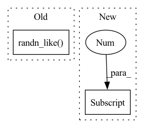

Pattern ID :22130

Before Change
reg = self.compute_mmd(z_reshaped, torch.randn_like(z_reshaped))
if self.noise_augmentation:
z = torch.cat([z, torch.randn_like(z)], 1)
return z, reg.mean()
After Change
reg = self.compute_mmd(z_reshaped, torch.randn_like(z_reshaped))
if self.noise_augmentation:
noise = torch.randn(z.shape[0], self.noise_augmentation,
z.shape[-1]).type_as(z)
z = torch.cat([z, noise], 1)
In pattern: SUPERPATTERN
Frequency: 3
Non-data size: 2
Instances
Fragment ID: 70099215
Project Name: caillonantoine/rave
Commit Name: fa103d506a5aedc8b0dd81943028d04f542436a5
Time: 2023-03-07
Author: caillonantoine@gmail.com
File Name: rave/blocks.py
M Class Name: WasserteinEncoder
N Class Name: WasserteinEncoder
M Method Name: reparametrize(2)
N Method Name: reparametrize(2)
M Parent Class: nn.Module
N Parent Class: nn.Module
M File Name: rave/blocks.py
N File Name: rave/blocks.py
M Start Line: 635
M End Line: 635
N Start Line: 635
N End Line: 637
'>
Before Change
diff = torch.zeros_like(z).mean()
if self.noise_augmentation:
z = torch.cat([z, torch.randn_like(z)], 1)
return z, diff
After Change
diff = torch.zeros_like(z).mean()
if self.noise_augmentation:
noise = torch.randn(z.shape[0], self.noise_augmentation,
z.shape[-1]).type_as(z)
z = torch.cat([z, noise], 1)
'>
Fragment ID: 70099214
Project Name: caillonantoine/rave
Commit Name: fa103d506a5aedc8b0dd81943028d04f542436a5
Time: 2023-03-07
Author: caillonantoine@gmail.com
File Name: rave/blocks.py
M Class Name: DiscreteEncoder
N Class Name: DiscreteEncoder
M Method Name: reparametrize(2)
N Method Name: reparametrize(2)
M Parent Class: nn.Module
N Parent Class: nn.Module
M File Name: rave/blocks.py
N File Name: rave/blocks.py
M Start Line: 673
M End Line: 673
N Start Line: 675
N End Line: 677
'>
Before Change
def forward_acquire(self, x, b, c, h, w):
//--Scale input image
x = (self.N0*(1+self.sig*torch.randn_like(x)))*(x+1)/2;
//--Acquisition
x = x.view(b*c, 1, h, w);
After Change
def forward_acquire(self, x, b, c, h, w):
//--Scale input image
a = self.N0*(1+self.sig*(torch.rand(x.shape[0])-0.5)).to(x.device)
print("alpha in [{}--{}] photons".format(min(a).item(),max(a).item()))
x = a.view(-1,1,1,1)*(x+1)/2;
'>
Fragment ID: 70099218
Project Name: openspyrit/spyrit
Commit Name: 6a6ddbe3456e08afa159029ccb02756f9972a02c
Time: 2021-07-05
Author: nicolas.ducros@insa-lyon.fr
File Name: spyrit/learning/model_Had_DCAN.py
M Class Name: noiCompNet
N Class Name: noiCompNet
M Method Name: forward_acquire(6)
N Method Name: forward_acquire(6)
M Parent Class: compNet
N Parent Class: compNet
M File Name: spyrit/learning/model_Had_DCAN.py
N File Name: spyrit/learning/model_Had_DCAN.py
M Start Line: 760
M End Line: 760
N Start Line: 765
N End Line: 767